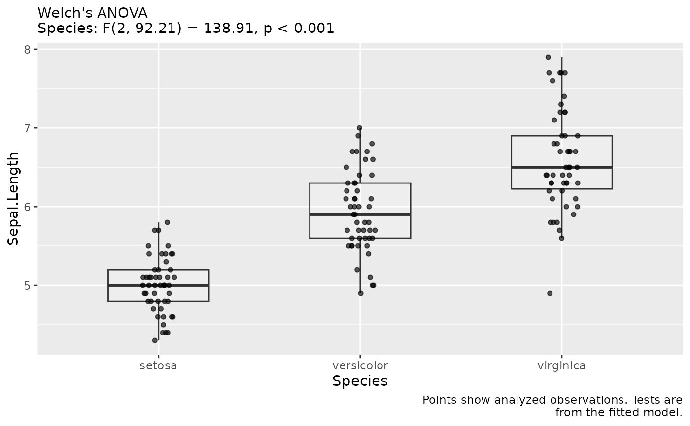

Draws the analyzed observations and annotates them with the model and
omnibus tests stored by fit_recommended(). No model, assumption check or
significance test is run while building the figure. The annotations therefore
describe the same fit as the manuscript sentences.
Arguments
- fit
A
colley_fitreturned byfit_recommended().- x
Predictor column to display. Defaults to the first predictor; an intercept-only fit is displayed as one group.
- ylab
Outcome axis label. Defaults to the outcome column name.
- xlabels
Optional labels for a categorical predictor, in factor order.
- show_test
Logical. Include the stored omnibus statistics in the subtitle. The model name is always shown.
Value
A ggplot object. It can be saved with save_paper_figure() or combined
with other plots using patchwork.
Details
For a categorical predictor and a numeric continuous/count outcome, repeated observations are averaged per cluster and predictor level for display. These are descriptive means, not model predictions or confidence intervals. Ordinal, binary and nominal responses are shown as counts of observed responses without averaging categories. Numeric predictors are shown as scatterplots. Other predictors remain in the fitted model whose tests are printed in the subtitle.
Examples
# \donttest{
fit <- fit_recommended(iris, "Sepal.Length", "Species",
outcome_type = "continuous", verbose = FALSE)
plot_fit(fit)

# }